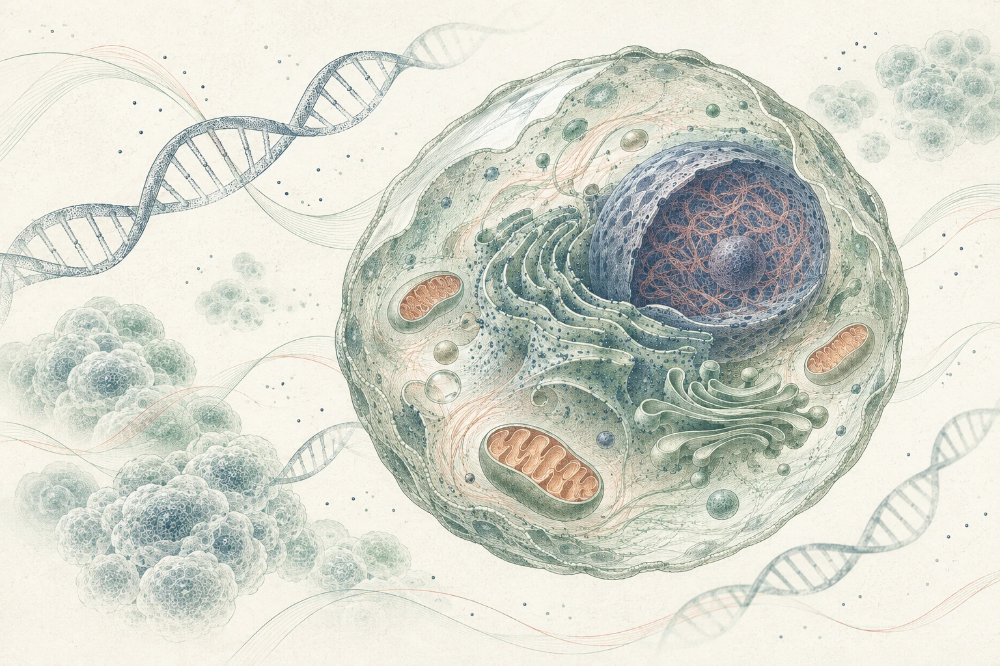

Computational biology
A literature atlas
Find the papers, datasets and benchmarks behind single-cell biology, virtual cells and molecular modeling.
- Papers
- Themes
- Publication years

Themes
Explore the field
Choose a theme to browse its methods, resources and related studies.
View topic trendsLibrary
Find a paper
Search titles, authors, methods and identifiers, or narrow the catalog using the filters.
Subscribe
Follow new entries
Choose a theme to follow newly added papers by RSS or email.
Confirm email subscriptions on FeedMail. Its delivery plans and limits apply.
Recently added
Sources
How the atlas is built
The reading collection is supplemented by topic-specific discovery. Records link back to their publication sources.
Coverage depends on the discovery sources and their indexing dates. The atlas includes bibliographic records and original conceptual illustrations.